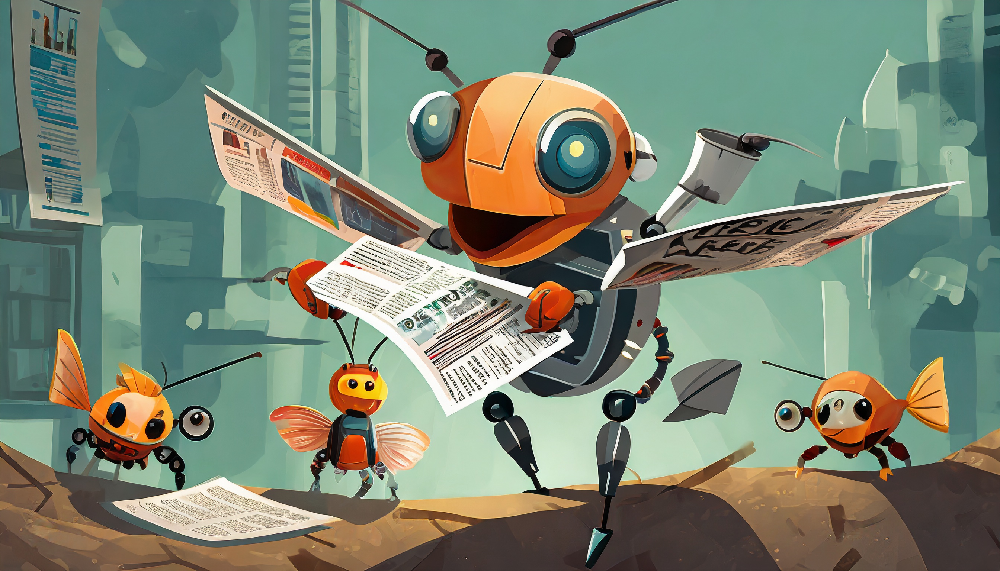

Moses Biological Computation Lab In the News
Menu

Image Created with Adobe Firefly
Home
Team
News
Swarmathon
Website Archive
Melanie Moses met with George R.R. Martin On Artificial Intelligence And Future Of Creative Economy
October 13, 2023
Understanding Interactions Among Diverse Fish Species
Nov 17 2022
NSF awards UNM’s Earth and Planetary Sciences Department with grant to establish new geohazards center
October 31, 2022
CARC annual meeting set for April 14
Will Crockett Awarded National Science Foundation Graduate Research Fellowship Program
May 15, 2023
Some state lawmakers push creation of artificial intelligence regulation at committee meeting
Jul 24, 2023
New Mexico lawmakers discuss artificial intelligence
July 24, 2023
UNM researchers take a deep dive into our changing planet with SIMReef project
August 09, 2023
AI is here, New Mexico must be ready
Aug 10, 2023
Legislative meeting highlights plans for a school year alongside AI
August 14, 2023
Lobo Living Room: The Bits & Bytes of Artificial Intelligence
August 29, 2023
AI is here. Here’s how New Mexicans can prepare
Sep 21, 2023
January 27, 2021
UNM NASA Swarmathon Airbus 2019 Diversity Award Finalist
June 22, 2018
Ackerman Team Takes 2018 RoboCup@Home Education
September 29, 2018
UNM CS Research Professor Matthew Fricke Presents at TEDxABQ
October 24, 2018
Airbus Selects Finalist Projects From Chile, Hong Kong And USA For The 2018 Diversity Award In Partnership With GEDC And UNESCO
Made with
Templated
.